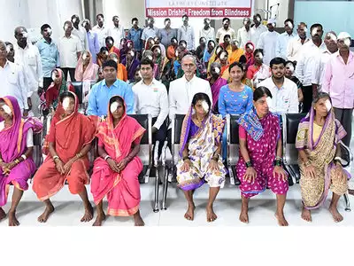

WE WORK ACROSS BOUNDARIES
TO SOLVE THE TOUGHEST PROBLEMS OF POVERTY
DUE TO NATURAL CALAMITIES.
EYE CHECK CAMP

The objective of this event is to spread awareness on eye disorders, their early detection and to detect refractive errors and eye ailments among people.
HEALTH CHECK-UP CAMPS
The general health check up of the patients will be done in the camp.
Medicines will also be provided to the patients.
A friendly interaction will be done with the paitent and with the community people making them aware of health care.